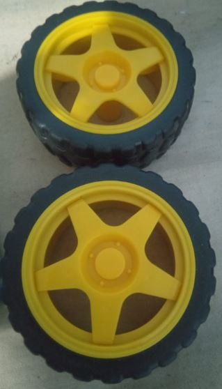
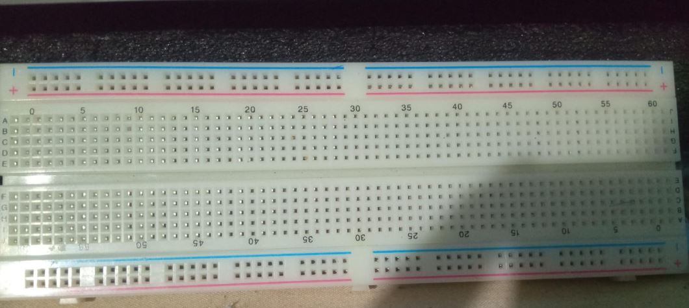
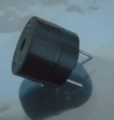
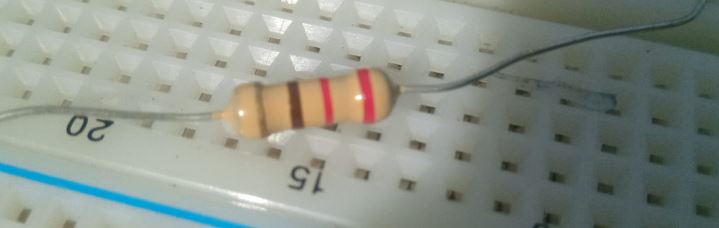
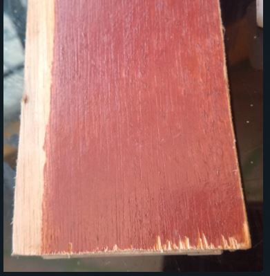
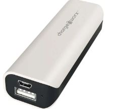
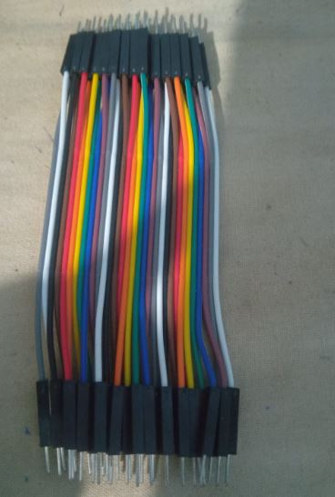

| MATERIALES | FUNCIÓN |
|---|---|
| Dos motores con cableado | 
Estos motores se utilizarán para propulsar el vehículo y permitir su movimiento. |
| Dos llantas | 
Las llantas se montarán en el vehículo para permitir su desplazamiento. |
| Una ruedita tipo balín | 
Esta rueda se utilizará como soporte para la parte delantera del vehículo. |
| Protoboard | 
Se usará para prototipar y conectar los componentes electrónicos de manera organizada. |
| Un arduino uno con su cable | 
Se utilizará como la unidad de control principal del vehículo, gestionando las entradas y salidas de los distintos componentes. |
| Un zumbador | 
Se utilizará para emitir alertas auditivas cuando el vehículo detecte un obstáculo. |
| Bluetooth HC-06 | 
Se utilizará para establecer una conexión inalámbrica con un Smartphone y permitir el control remoto del vehículo. |
| Una resistencia de 220 ohmios | 
Se utilizará para proteger el sensor de ultrasonidos. |
| Sensor de ultrasonidos | 
Este sensor se utilizará para medir la distancia entre el vehículo y los obstáculos circundantes. |
| Una tabla 18x10 | 
Se usará para la base de nueststo vehículo. |
| Cargador portátil para celulares | 
Se utilizará para alimentar el Arduino Uno |
| AWG26 (cables para protoboard) | 
Se utilizarán para conectar todos los componentes entre sí y con el Arduino. |
| Aplicacion arduino | 
Utilizaremos la aplicación para programar nuestro arduino y poder dar movimiento al vehículo. |
| Aplicacion App Inventor | 
Utilizaremos la aplicación para crear controles para nuestro vehículo como botones para moverlo adelante, atrás y derecha, entre otras funciones |